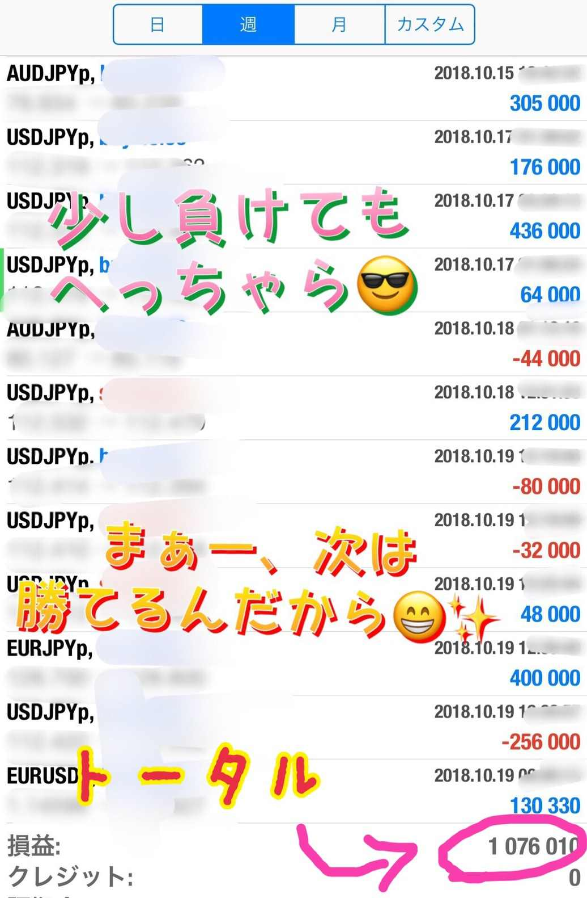
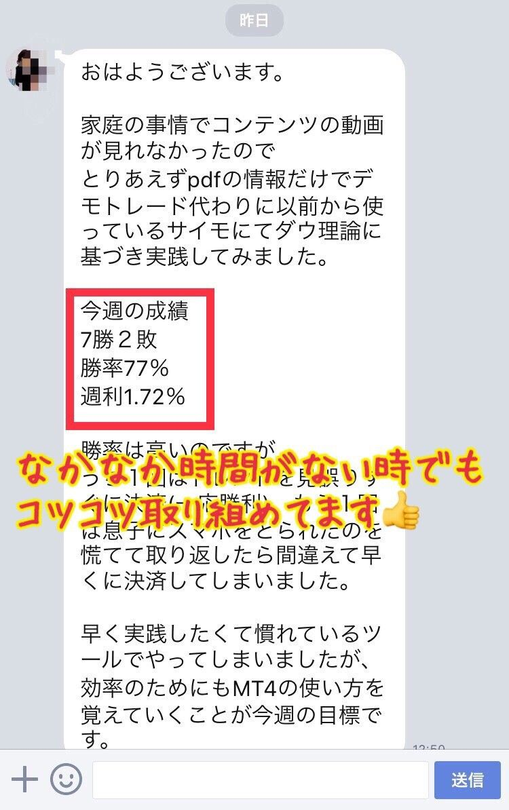

| サラリーマンが稼いじゃダメですか！？ 〜某副総理「老後の2000万必要」発言 FX投資で問題なし！！〜 | |
| 森川満章 | |
| Hitotsuku Publication (2019) | |
■はじめに
あなたは将来どのような暮らしを手に入れたいですか？
「毎年年末年始にハワイに行きたい！」
「タワーマンションの高層階に住みたい！」
「海外で暮らしたい！」
「お金の心配をせずに悠々自適に暮らしたい！」
など、あなたにも夢があるはずです。
では、実際にどれだけ夢に近づくことができましたか？
その夢に向かって計画的に進んでいっていますか？
そもそも、夢は実現できると心から思っていますか？
多くの人は、夢はあるけど、妄想しているだけで、本当に叶うなんて思ってもいないのではないでしょうか。
それって非常にもったいないと思うのです。
私は夢を実現することができました。
自由な時間と、自由に使えるお金を手に入れ、悠々自適な生活を送っています。
それはなぜか？
私に才能があったから？
学歴があったから？
違います。
お金を稼ぐノウハウを知ったからです。
私には、他人と比較して飛び抜けた才能は無いと思っていますし、学歴も東大出身というわけではありません。
ただ、事実としてお金を稼ぐことができています。
繰り返しになりますが、それがなぜかと言うと、お金を稼ぐ情報を知っているからです。
あなたは不思議に思ったことはありませんか？
世の中にお金持ちと貧乏な人がいることを。
なぜ同じように頑張っているのに、ここまで貧富の差が出るのかと。
もちろん生まれ育った家庭環境や学歴も年収に関係してますが、それ以上に、お金の稼ぎ方を知っているかどうかということが、お金持ちと貧乏な人を区別しているのです。
であれば、お金を稼ぐためのノウハウを知ったほうが得だとは思いませんか？
この書籍では、そのノウハウを凝縮して記載しています。
この書籍を最後まで読むことで、お金持ちへの扉が開かれるのです。
読んで損はありません。ぜひ最後まで読んでいただければと思います。
実は、私はサラリーマンです。今は、給料が欲しくてサラリーマンをしている訳ではありませんが、昔はとにかく給料が上がってほしかったのを覚えています。
それが無駄な努力だということを今になって気付きましたが、もし今あなたが、サラリーマンとしてもがき苦しんでいる状態なのであれば、この書籍がその状況を打開できるきっかけになればと思っています。
私は今、サラリーマンと投資家とコンサルを中心に活動をしています。
他にも石油案件や、ＳＮＳ集客、トップ営業マンの営業ノウハウのコーチングなど様々な分野でお仕事を頂いているのですが、ある特定の指針に基づいて行動をしています。
お金を稼ぐとはどういうことか？
どのような職業がお金を稼げるか？
そもそもお金が発生する仕組みは何なのか？
ということを知ることができれば、自然とお金は稼げるようになりますし、末広がりに活躍の場は広がっていくでしょう。
この書籍があなたの活躍を広げる原動力になれば幸いです。
■第１章 なぜ、あなたの夢は実現しないのか
・強く願えば夢は叶うは本当なのか？
あなたは具体的な夢を何個もっていますか？
少し考えてみてください。
どうでしょう？ すぐに出てきましたか？
「○○と○○と○○！ だから○○個！」とすぐに答えられないようでは、あなたは夢に向かって進んでいるとは言えないでしょう。
夢は具体的でないと実現することができないからです。
ただ、「こうだったらいいな」「ああだったらいいな」と思い描いているだけでは、夢は実現できないのです。
言われなくてもわかっていることだとは思いますが、実際に具体的な夢を持って行動している人は、ほんの一握りだけではないでしょうか。
漫然と職場に行き、帰ってご飯を食べ、お風呂に入って寝る生活に慣れてしまっていませんか？
あなたはそんな人生を望んでいましたか？
小さい頃は、もっとギラギラした人生を思い描いていたのではないでしょうか？
今からでも遅くはありません。夢の実現に向けてもう一度動き出しませんか？
夢が叶うかどうかは、本人がどれだけ強くその夢を実現させたいと思うかにかかっています。
夢を叶えたいと本気で願えば、不思議とその道は開けます。
嘘のような話ですが、本当です。
私もそのようにして夢を実現させました。
今では旅行にも好きなタイミングで行っていますし、趣味の時間も充実しています。美味しいものもお金を気にせず食べることができています。
お金の稼ぎ方については、書籍の中で具体的に紹介していきますが、まずは夢や目標を具体的に定めることから始めましょう！
もしかしたら、あなたの夢はお金があれば叶うようなものではないかもしれません。
しかし、お金はあって困ることは絶対にないでしょう。
夢を実現するために必要な時間だって、お金で買うことができます。
お金があれば愛だって買えると言っている極端な人もいますが、お金が多いほうが恋愛をするうえでも優位に働くことは想像できるのではないでしょうか。
・自分の大切な人が病気になったらあなたは救えますか？
私は若い頃は、お金なんてどうでもいいと思って生きてきました。
普通にサラリーマンをして、普通に給料をもらって普通に暮していければ十分だと思っていたのです。
しかし、家族や子供ができて発想が変わりました。
家族に豊かな生活を送らせてあげたい！
そして、もし子供に何かあったときのために十分なお金を稼ぎたい！ と思ったのです。
人生は何が起こるかわかりません。
ある日突然病気になったり、交通事故にあったりするのが、人生というものです。
子供が病気になって高度の医療が必要になったとき、あなたは子供を助けることができますか？
そう考えると、お金って本当に大切だなと思います。
裕福な生活を望んでいない人でも、自分の大切な人は絶対に救いたいと思っている人は多いのではないでしょうか。
そのためにも今一度、お金の重要性について真剣に考えてほしいと思います。
・１億円あっても不安？老後資産はいくら必要なのか
お金について考える中で、絶対に忘れてはいけない人生の出費があります。
それが、あなたの老後の資金です。
あなたは老後にどれくらいの費用が必要になるかを知っていますか？
インターネットで検索すれば簡単に出てきますが、最低でも３０００万円が必要とされています。
しかし、これには前提があります。
退職金や年金がもらえるという前提です。
今現在、退職する人達は３０００万円の貯蓄さえあれば、退職金と年金だけで何とか暮らしていけるとされていますが、あなたが会社を退職する頃に十分な退職金がもらえるとは限りません。
まして、年金なんて全くあてになりません。
既に崩壊していると言われている年金を信じて、あなたは老後を迎えますか？
もし、年金がもらえなかったときに老後破綻して、あなたは悔いなく人生を終えることができますか？
答えは必ずＮＯのはずです。
にも関わらず、対策をしている人って案外と少ないものです。
「何とかなるだろう」「国が守ってくれるだろう」と思っている人が多いのでしょう。
しかし、国は意外と守ってくれませんし、意外と何とかならないものです。
ぜひ「老後破綻」とインターネットで検索してみてください。
結構な数の高齢者が、とても貧しい生活をしているのがすぐにわかるでしょう。
・貧富の差が拡大！資産１億円以上が１２６万世帯もいる事実
「お金が必要だ」と考えていても、「自分で大金を稼ぐのは無理だ」と思っている人は結構多いのではないでしょうか。
先ほど、「夢は叶う」という話をしましたが、日本でお金持ちになるという夢を実現させた人はどのくらいいると思いますか？
富裕層と呼ばれる人は１億円以上の金融資産を保持する人
のことを指しますが、この人達は日本で、なんと１２６万世帯
もいます。
ちなみに、準富裕層と呼ばれる金融資産５０００万円以上
のお金持ちは日本に３２０万世帯
もいます。
これって結構多くないでしょうか？
金融資産とは、現金や株式など、すぐに使えるお金の額を指すので、持ち家などの資産は含みません。単純に自由に使えるお金を沢山持っている人が、日本にはこれだけ多くいるのです。
そう考えるとお金持ちになれるハードルって、それほど高くないと感じることができるのではないでしょうか。
大学受験で東大や京大に入るよりよほど簡単に、高い確率でお金持ちになることができるのです。
ただし、サラリーマンだけで金融資産１憶円を稼ぐことは非常に困難です。
外資系企業の高給取りであれば可能かもしれませんが、富裕層の多くは自分でビジネスをしているか投資をしている人達です。
ビジネスや投資と聞くと、とてもハードルが高いように感じますが、実際に１２６万世帯もの人がビジネスや投資に成功しているのです。
そう考えると、あなたに出来ないわけがないと思うのです。
ただ、今のまま、周りと同じように生活しているだけでは、突然富裕層になることはできません。
富裕層は富裕層になるべくしてなっています。
お金を稼ぐ方法を知っているからお金を持っています。
お金を稼げるようになるためには、お金持ちと貧乏な人の行動や考え方の違いを観察し、お金持ちが取っている行動を真似することが一番の近道です。
そこで、２章ではお金持ちと貧乏な人の考え方の違いについて触れていきたいと思います。
■第２章 お金持ちと貧乏人は何が違うのか？
・サラリーマンが絶対にお金持ちになれない理由
そもそもお金持ちって何をして稼いでいると思いますか？
サラリーマンをして稼いでいると思いますか？
結論から言うと、サラリーマンは絶対にお金持ちになることができません。
外資系企業の高給取りにでもならない限り、高い給料を望むことはできないのです。
20
代の若い世代に多い誤解ですが、会社の中でいくら頑張っても給料はほとんど上がりません。
インターネットで「年代別給料」などで検索してみればわかるのですが、新入社員と60
前の部長の給料の差はほとんどないのです。
もちろん差はありますが、新入社員の何倍も何十倍も何百倍も知識があり、仕事がどれだけできても、給料で２倍以上の差が開くことはなかなかありません。
けっこう理不尽な世界だと思うのです。
資本主義なのだから、他人の２倍働いたら給料も２倍、３倍働いたら給料も３倍にすべきなのですが、現実はそうはなっていません。
なぜなら、会社は利益を出すために存在しているので、費用である従業員の給料を多くすることは、会社の目的に反しているからです。
日本にあるほとんどの会社は株式会社です。
株式会社は、株主の利益を最大化するために設立されているので、売上はできるだけ多く、そして費用である従業員の給料はできるだけ低く抑えようとする動きが必然的に出てくるのです。
ですから、出世して給料を上げようという発想そのものが非現実的なのです。
もちろん毎年少しずつは上がるでしょうが、あなたの努力に比例して上がることは絶対にないと言えます。
ですから、お金持ちになりたいのであれば、まずはサラリーマンという働き方を見直すところから始める必要があります。
もちろん、サラリーマンにもいいところはあります。
毎月一定の給料が入ってきますし、大企業であればある程度雇用は安定しています。
しかし、サラリーマンという職業のデメリットも十分に理解しておかなければならないということです。
・宝くじに当たった人が不幸になるのはなぜ？
お金持ちは、サラリーマン以外の収入を得ているからお金持ちなのですが、収入の量だけが資産を左右するわけではありません。
どんなに多くの収入があってもお金持ちになれない人は沢山いますし、逆に、収入はそこまで多くなくても金融資産を贅沢に保有している人も多くいます。
あなたは、宝くじに当たった人が破産しやすいという事実を知っていますか？
宝くじに当たった人は、何のお金の知識も持たずに大金を手にするので、多くの場合浪費を繰り返し、破産してしまいます。
最近では、その対策として、宝くじが当たった人向けに破産しないための冊子が配られているそうですが、それでも破産する人は後を絶たないようです。
それもそのはず、貧乏人はお金についての知識が全く備わっていないので、ある日突然宝くじで大金を手に入れても、すぐに使いこんでしまうのです。
車の運転方法を知らない人が、いきなりスポーツカーを運転して交通事故になるようなものです。
仮にお金持ちが宝くじで大金を手に入れたとしたら、その資金を運用して、利子だけで生活を送るはずです。
しかし、貧乏な人が宝くじに当たると、すぐに生活水準を上げ、豪遊してしまうのです。
要は、お金についての知識や計画性が全くないのです。
お金の知識があり、それをうまく活用する能力のことを「マネーリテラシー」と呼ぶのですが、お金持ちにはこのマネーリテラシーが備わっているのです。
実は、このマネーリテラシーは学校では教わることがありません。
あなたも、学校でお金や運用の勉強をしたことがないはずです。
マネーリテラシーは、個人的に関心を持って勉強しないと備えることができないのです。
だからお金持ちが少なくて貧乏な人が多いのです。
しかし、これはあなたにとっては非常にチャンスです。
勉強は日本人であれば誰でも教わりますが、マネーリテラシーは自発的にしか学ばないので、お金持ちになるための競争率は実はとても低いのです。
勉強して行きつく先の東京大学はハードルが高いですが、マネーリテラシーを高めて行きつく先の富裕層は非常にハードルが低いということです。
ですから、誰でもマネーリテラシーさえ高めれば富裕層になることができます。
このチャンスを逃さずに、まずはマネーリテラシーを高めて富裕層入りを目指しましょう！
・お金持ちが銀行に貯金しないって本当？
マネーリテラシーを高めるための知識として、最初に紹介したいことがあります。
それは、お金持ちは銀行に貯金をしないということです。
もちろん、日々の生活に使用する程度は銀行に預けていますが、お金持ちは、銀行に預けているお金より遥かに多くの金額を「運用」に回しています。
なぜなら、銀行に預けていてもお金は一向に増えないからです。
それどころか、銀行にお金を預けると資産価値が減るという事実をあなたは知っていますか？
現在政府は毎年２％
の物価上昇を目標に掲げています。
つまり、１００円のリンゴが、１年後には１０２円になるような目標を掲げているのです。
経済が成長していくうえで、物の値段が上がるということは非常に重要なことです。そのため、政府は２％
の物価上昇を目標に掲げ、物の値段が上がるような政策を数多く行っているのです。
毎年「春から○○が○○円値上がりします」というニュースを聞いたことがあるかと思いますが、気付かないうちに物の値段は徐々に上昇しているのです。
にも関わらずに、利子のほとんど付かない銀行にお金を預けていると、どういうことになるでしょうか。
銀行に１００円を預けておいても１年後は１００円ですが、リンゴの値段は１００円から１０２円に値上がりしてしまいます。
銀行に預けておくと、去年買えたものが買えなくなってしまうのです。
つまり、あなたが銀行に預けているお金の資産価値は、毎年目減りしているのです。
お金持ちはこの事実を知っているので、銀行に預けるお金を最小限に留め、自ら運用することで資産を守っているのです。
・いくらお金が必要なのかを明確にしよう！
あなたは運用と聞いて何を思い浮かべますか？
一番有名なのが、ＦＸなどの投資ではないでしょうか。その他にも色々な運用方法がありますが、どんな運用方法を採用するにしても、お金持ちになるための最初のステップとしてしなければならないことがあります。
それは、自分がどれだけのお金が必要なのかを明確にすることです。
病気になったときに大切な人を救うにはいくらかかるのか、老後の費用はどれくらいかかるのか、そして自分の夢を実現するためにはどれくらいのお金が必要になるのか、一度調べてみることをおすすめします。
インターネットを使えば、そういった情報はすぐに手に入ります。
何か夢を実現するうえで、目標を設定するということは非常に重要になります。
目標を設定することで初めて、目標から逆算して、今自分が何をすべきかを明確にすることができます。
人間とは弱い生きものですから、今何をすべきかが明確になっていなければ、すぐにだらけてしまうものです。
自分のやりたいことだけをやって、たまたまお金を稼げれば幸せですが、そんなことは非常に稀です。
どんな富裕層でも、必ず目標を設定し、今自分が何をすべきかを明確にし、それに向かって必死に努力をしています。
逆に貧乏な人は、目標を設定することなく、毎日を漫然と生きています。
目標を設定して頑張っている人と、毎日を漫然と生きている人の、どちらが富裕層になれると思いますか？
まずは、自分が何を目標としているのかを明確にすることが大切です。
例えば、毎年年末年始にハワイに行きたいと考えている人は、まず年末年始のハワイの費用がどれくらいかかるのかを調べてみることをお勧めします。
１００万円かかるのか２００万円かかるのか。それによって日々稼がないといけない額が違ってくるはずです。
毎日１万円稼ぐのか２万円稼ぐのかでも、選ぶべき作戦は変わってきます。
まずは自分の夢は何なのか、それにどれだけの費用がかかるのか、それがいつまでに必要なのかを明確にすることが、富裕層への第一歩と言うことができるでしょう。
目標が設定されたところで、実際にどのようにして稼ぐべきなのかを、具体的に第３章で触れていきたいと思います。

■第３章 不労所得を得るための４つの裏技
・遊びたい放題？不労所得を得ると生活はどう変わるのか？
あなたは不労所得を得ている人と出会ったことがありますか？
サラリーマンをしている人は、なかなか出会うことがないかもしれません。
不労所得を得ると、言うまでもなく、お金が自由に使えるようになります。
ただ、私がそれよりも大切だと思っていることは、時間の自由が手に入るということです。
サラリーマンをしていると、毎日のように締め切りに迫られ、１年があっと言う間に過ぎていきます。
しかし、不労所得を得ると、まるで小学生に戻ったように、時間が長く感じます。
自分の好きなことを、誰にも制限されることなく自由にすることができるのです。
毎日ゲームをし続ける人もいますし、世界中を旅している人もいます。
不労所得を得ている人は各々で自分の好きなことをして、人生を有意義に過ごしているのです。
不労所得は読んで字のごとく、働かずして収入を得ることができる手法です。
この方法を取りいれれば、お金が入ってくるうえに、時間は自由に使えるようになれます。
毎日汗を流して働かなくてもお金が入ってくるので、自分が本当にやりたいことだけに集中して人生を歩むことができるのです。
ただ、私の場合は働くことを続けたかったので、今でもサラリーマンを続けています。
毎日自分の好きなことだけをやっていると、楽しみや喜びが半減するような気がしているので、サラリーマンという職業は私の中では非常に重要なものなのです。
これから富裕層を目指すあなたも、最初はサラリーマンを継続しながら不労所得を得る方法を模索することをおすすめします。
いきなり独立しても成功できるとは限りませんし、生活のリズムを整えるうえでもサラリーマンという職業は非常に有益だと思っています。
ただ、サラリーマンの収入「だけ」に頼ることは非常に危険だと私は思っています
その弊害について少し触れていきたいと思います。
・収入源は一局に集中させるな！時代の流れは複業！
収入減を一局に集中させるのは、その収入減がなくなれば逃げ道がなくなる訳ですから非常に危険です。
「僕は大企業に勤めているから将来安泰」と考えている人は、特に注意が必要です。
なぜなら、今は大企業でも簡単に倒産する時代です。インターネットの普及で産業の構造が大幅に変わろうとしている時代ですから、今生き残っている会社があなたの定年まで存在するとは限らないからです。
会社が将来潰れても生きていけるだけのスキルを自分に付ける必要があるのです。
また、年齢が上がると共に社内の競争に巻き込まれ、あなたがその会社にいられなくなる可能性だってあります。
そのとき、あなたは他の会社に移って活躍できるだけの能力を備えているでしょうか？
ここで言う能力とは、他の会社でも通用するだけの能力です。
特定の会社でだけ価値のある能力は、他の会社で通用するとは限りません。
部長という職業が特定の会社で勤まっていても、他の会社では何の役にも立たない可能性は極めて高いです。
大企業に勤めている人は、取引先から頭を下げられることが多いため、「自分は能力がある」と誤解している人がたまにいます。
しかし、それはその人に対して頭を下げているのではなく、企業の看板に対して頭を下げているだけです。
にも関わらず多くの人が誤解して、自分の能力を高く見積もってしまいますが、他の会社では全く通用しないことが多いです。
要は、自分１人では何もできない人が多いということです。
そんな人は、今からの時代安心して暮らしていくことができません。
企業の看板に頼ることなく、自分で稼げる能力を身に付けることが大切なのです。
もし、あなたがサラリーマンなのであれば、今すぐ副業を始めることをお勧めします。
政府も働き方改革の一環で、副業を推奨するようになりました。
まだまだ副業を推奨している会社自体は少ないですが、これからは徐々にそういった会社が増えていくでしょう。
なぜなら、副業は個人の稼ぐスキルを向上させるものですから、企業側としてもメリットがあるのです。
サラリーマンをしながらの副業は、サラリーマンとしての安定的な地位と収入を確保しながら、収入とスキルの向上を目指すことができます。
いきなり独立してビジネスを始めるよりも、はるかに安全にお金を稼ぐことができるのです。
サラリーマンの最大のメリットは、毎月一定額の給料が入ることにあります。
これは長い目で見ると非常に重要で、生活の安定に欠かすことはできません。
万が一副業で失敗したとしても生活に影響が出ることはないので、安心して挑戦することができます。
独立して失敗してしまうと、後戻りができませんが、サラリーマンをしながら副業していれば、失敗を恐れずに挑戦することができます。
サラリーマンは社会的な信用力が高いこともメリットになります。
独立すると、収入はあってもローンが組めないなど社会的な信用が低いので、サラリーマンという後ろ盾は、社会生活を送るうえで非常に有益だと言えます。
・副業を本業に！サラリーマンを趣味にしよう！
副業はサラリーマンのように誰かに命令されて行うものではないので、非常に気軽に、そして楽しみながらお金を稼ぐことができます。
特に副業仲間を見つけて一緒にお金を稼ぐことは、効率的な稼ぎ方を知れたり、交流関係が広がったりとメリットが沢山あるのでお勧めです。
会社の中のような閉鎖的な空間ではないので、人間関係が良好なこともお勧めするポイントになります。
副業が軌道に乗ってくると、多くの人が本業よりも多くの収入を得ています。
世の中の仕事は意外と単価が高いことも知ることができるでしょう。
「こんなに簡単なことで、こんなにもお金がもらえるのか」と思うかもしれません。
それだけ会社という組織は、あなたから時間と労力を吸い上げているのです。
ただ、先ほども触れたようにサラリーマンにもメリットが沢山あります。
安定的に収入を得ることができますし、社会的な地位も高いです。
ですから、どんなに会社から搾取されていても、「これはこれ」と割り切ってサラリーマンを続けることを私はお勧めしています。
楽しさや収入は副業で、社会的地位や安定はサラリーマンで確保するという考え方が、非常にバランスが取れていいと私は考えています。
少なくとも、副業を始めることで、会社に対する考え方は大幅に変わります。
副業を始める前は「会社をクビになったらどうしよう」などと考え、会社の言いなりになっている人が非常に多いかと思います。
しかし、副業を始めると、「クビにしたければ、どうぞクビにしてください」というスタンスで働くことができるので、肩の力が抜けて逆に評価が上がったりします。
副業をする、ほとんど唯一と言っていいほどのデメリットは、やり方によっては時間がなくなるということですが、これは副業を始めたころだけと考えておいて問題ないと思います。
人間誰しも、初めてやることは時間もかかりますし、成果も低いものですが、徐々に短時間で高収入を得ることができるようになります。
ですから、とにかくまずは副業をやってみることをお勧めします。
やってみて、どうしても無理だった場合は、そのとき考えればいいことです。
挑戦しなければ、何も始まりません。
・世の中にはどんな不労所得がある？流行りの不労所得を知ろう！
副業ってどのようなものがあるでしょうか。
一例をあげると、投資、ブログ、転売、アフィリエイト、ライター、プログラミング等が挙げられます。
これら、どれでもお金は稼ぐことができます。
しかし選ぶものを間違えてしまうと、ただ忙しいだけになってしまうので注意が必要です。
世の中には、副業したい人を狙って、労働力だけを搾取しようとする人やシステムもあるからです。
ですから、自分にとって一番利益が高いものはどれかを選ぶ力を身に付けることが、まず大切になります。
副業を選ぶうえで、一番重要になるのは、その労働が将来の自分のためになるかどうか？ です。
例えば、単純作業を行うだけの副業では、掛け捨ての労働になってしまい、将来の自分に何の蓄積もすることができません。
どうせ、副業をやるのであれば、将来に自分のためになる積立型の労働を行うべきです。
要するに、箱にシールを張るような仕事ではなく、著作権を得れたり、蓄積できたりして、将来自分が働かなくても、自動的にお金が入ってくる不労所得を作るための仕事をすべきです。
短期的な収入ではなく、自分の将来を見据えて、資産となるような仕事をすることで、同じ努力をするにしても、効率的に収入を得ることができるのです。
例えば、何かサイトを作って広告収入を得ることを考えたときでも、短期的にアクセスが集中するようなサイトを作るのではなく、長期的にコンスタントにアクセスされ広告収入を得られるサイトを作るほうが不労所得に結びつきやすいと言えます。
このように、副業を選ぶうえでは、何が自分の将来の不労所得になるのかを戦略的に考えることが非常に重要になります。
とは言え、不労所得は、そんなに簡単に手に入るものではありません。
簡単に手に入るのであれば誰でもやっています。
そこで、私がおすすめする副業を、第４章で具体的に紹介していきたいと思います。

■第４章 お金を働かせるという発想を手に入れよう！
・世の中にある働き方の裏技を知ろう！
不労所得というものを考えるうえで、知っておかなければならないのが、「働く」って何なのか？ という話です。
あなたは「金持ち父さん 貧乏父さん」という本を知っていますか？
その中では、世の中の働き方が４つに分類されています。
「従業員」「自営業者」「ビジネスオーナー」「投資家」の４つです。
この４つの中で決定的な違いは何でしょうか？
それは「従業員」と「自営業者」は自分の時間を売ってお金を得ていて、「ビジネスオーナー」と「投資家」は人やお金に働いてもらっていることにあります。
「従業員」の代表例はサラリーマンです。毎日８時間拘束され、その中で成果が上がろうがそうでなかろうが、一定の額をもらえるのがサラリーマンです。
「自営業者」の中には医者や弁護士などお金持ちも中にはいますが、自分の時間を売っていることには変わりがありません。
一方で「ビジネスオーナー」は忙しそうなイメージがありますが、軌道に乗れば働いてくれるのは従業員です。自分が働こうが働かないでおこうが、収入を得ることができます。
また、「投資家」は言うまでもなく、働くのは自分ではありません。お金を投資する先さえ決めてしまえば、お金がお金を稼いできてくれます。
さて、あなたはどのような働き方をしたいですか？
おそらく、「ビジネスオーナー」か「投資家」ではないでしょうか。
不労所得を得るためには、この「ビジネスオーナー」か「投資家」になる必要があります。
開業している医者や弁護士などの「自営業者」もお金は稼いでいるでしょうが、「不労」ということにはなりません。
いくらお金が稼げても、時間がなくては有意義な人生を送れているとは言えないでしょう。
お金を得たうえで、時間も得るためには、「ビジネスオーナー」か「投資家」になる必要があります。
しかし、ビジネスオーナーは単純に考えてハードルが高いと思いませんか？
まず、何のビジネスをしたらいいのかわからないという人が多いと思います。
実際、稼げるビジネスというものは存在しますが、将来的に稼ぎ続けられるか、思っているビジネスが成功するかどうかは誰にもわかりません。
ビジネスをやるという楽しみはありますが、不労所得を得ることを目的とするのであれば、ビジネスオーナーを目指すよりも投資家を目指すほうがいいでしょう。
・お金がお金を生む「投資」の手法を身に付けると人生が楽になる！
投資というものは、不労所得を得るうえで一番手軽で確実な方法と言えます。
なぜなら、投資で不労所得を得ている人の割合が、他で不労所得を得ている人の割合よりも圧倒的に多いからです。
自分でサイトを作って広告収入を得たり、本や歌・プログラミングで著作権を得たりして不労所得を得ている人も中にはいますが、投資で不労所得を得ている人に比べると圧倒的に少人数です。
広告収入を得られるようなサイトを作るまでには、早くても半年から１年かかるうえに、実際に収入が得られるかどうかは半年後か１年後にしかわからないですし、歌の著作権で収入が得られるなら、初めからやっているという話です。
そのような不確実なものを除外していくと、投資で不労所得を得るのが一番確実だということがすぐにわかるでしょう。
私の周りにはお金持ちの友達が沢山いますが、お金持ちは基本的にみんな投資を行っています
。
もはや、投資はお金持ちになるための登竜門と言っても過言ではありません。
それだけメジャーで安定的に収益を得られる手法が投資なのです。
投資がいいのは、一度投資を行うと、定期的に収入を得られるだけではなく、雪だるま式に収入が増えていくことにあります。
例えば１００万円を元手に毎年10
％
の利益を上げると、初年度こそ10
万円の利益しかありませんが、２年目は、１１０万円の10
％
の11
万円が利益になります。
そして、５年後には15
万円の利益を得ることができるようになります。
このように、利益の額は毎年雪だるま式に増え続け、長い目でみると、最初の何倍もの利益を得ることができるようになるのです。
これが複利という発想で、投資をするうえで非常に重要な考え方になります。
・ＦＸ・株式・不動産投資の中で成功しやすいのはどれ？
投資というものの有用性を紹介したところで、実際にどのような投資があるのかを簡単に紹介していきたいと思います。
まずはＦＸです。ＦＸは、外国の通貨と日本の通貨の交換比率の変動に注目した投資手法です。
あなたもテレビで、「今日の円相場は○○から○○でした」というニュースを聞いたことがあると思いますが、外国の通貨と日本の通貨の交換比率は常に変動しています。
例えば、１ドル１００円が１ドル１２０円に変動したりします。
アメリカで売っている１ドルのリンゴが、１００円で買えるときと１２０円出さないと買えないときがあるのです。
この交換比率は、日本とアメリカの色々な思惑によって変動するのですが、重要なことは「変動する」ということです。
「１ドル１００円」のときに、１００円を１ドルに交換し、「１ドル１２０円」のときに１ドルを１２０円に交換すれば、１００円が１２０円になってしまうのです。
これをもっと大きな元手で行えば、例えば１００万円が１２０万円になるのです。これがＦＸです。
続いては株式投資です。
株式投資は、会社が発行する株券を購入して、その価格の値上がりを狙う投資です。
株価は会社が利益を出すと上がるので、予め利益を出しそうな会社の株券を購入しておき、思惑通りに会社が利益を出すと、多くのリターンを得ることができます。
ただし、どの会社が利益を出すのかの予想は非常に難しいうえに、会社が多すぎてどこに投資をしたらいいのかを絞り切れないという悩みがあります。
会計学の専門的な知識を得て、理論的に会社が出す利益を予想できればいいのですが、初心者には難しい投資と言えます。
続いて不動産投資ですが、これはマンション等の１室を購入し、そこに入居する人から家賃収入を得る投資です。
不労所得のイメージが一番しっくりくるのが、この不動産投資ではないでしょうか。入居者の募集やメンテナンスは管理会社に委託することができるので、不動産を選ぶ時点で失敗さえしなければ、安定的に収入を得続けることができます。
ただ、不動産投資は、最初に不動産を買うための資金が必要です。
これから投資を始めようとする人にとって、マンションを買うだけの資金を用意することは困難ですし、優良な物件を見つけるだけの目利きを養う必用があるので、ハードルが高いのは難点です。
多くの場合、最初はもっとハードルの低い投資を行い、不動産についての知識やお金が貯まってから不動産投資を始めるパターンが一般的です。
将来不動産投資で不労所得を得ることを目的にお金を集めることも、夢の通過点の目標設定としてはいいのかもしれません。
その他の投資として、最近は仮想通貨が人気です。
仮想通貨は、読んで字のごとく、仮想の通貨に投資をする手法です。ビットコインやイーサリアムといった仮想の通貨に投資を行い、その通貨が値上がりすることを期待する投資です。
仮想通貨は将来への期待が高いので、通貨自体が投資の対象となっているのです。
最近は値動きが落ち着いているのですが、将来また人気が再熱する可能性があるので目が離せません。
ただ、継続的に安定して収入を得ることを考えると、ＦＸ・株式投資・不動産投資がおすすめです。
この３つであれば、長年のノウハウが蓄積されているので、どれを選んでも勝つことは可能です。
しかし現実的な問題として、不動産投資は初期費用が高いこと、株式投資は銘柄が多すぎて分析が難しく、専門的な知識がないとギャンブルのような投資手法になってしまうことを考えると、初心者にはＦＸが一番お勧めだと言えます。
・なぜ初心者にはＦＸが向いているのか
ＦＸは不動産投資のように多くの初期費用を必要としませんし、逆に、多くの資金があるかのように投資を行うことができます。
どういうことかと言うと、ＦＸは資金を十分に持っていない人でも簡単に始められるように、レバレッジという制度を設け、少額でも投資を行えるようなシステムとなっています。
例えば資金が10
万円しかなくても、レバレッジを利用して25
倍の２５０万円の資金があるものとして取引することができます。
資金10
万円では、10
％
の利益が出ても利益は１万円ですが、レバレッジを利用して２５０万円の資金を運用すると25
万円の利益を出すことができるのです。
実はこのレバレッジという制度は株式投資にもあるのですが、３倍までのレバレッジしか設定することができません。
しかしＦＸでは25
倍までのレバレッジを用意している証券会社が多く、資金が少なくても充分の利益を出すことができる仕組みが取られているのです。
なお、海外の証券会社を使用すると、５００倍、１０００倍とレバレッジを効かせ、さらに大きく稼ぐことが容易にできます。
しかも、ＦＸは
24
時間自分の好きなときに取引を行うことができます。
これと引き換え、株式投資は平日の日中にしか取引を行うことができません。
ちょうどサラリーマンが働いている時間です。
取引を予約することは可能なのですが、やはりリアルタイムに値動きを見ながら取引を行うほうが確実なので、その意味でもＦＸはサラリーマンをしながらの副業に最適です。
そして、ＦＸの利点はスマホでも簡単に取引することができる点にあります。
不動産投資となると、書類を何枚も作成し印鑑を押す必要がありますが、ＦＸにはそのようなわずらわしい手続きは必要ありません。
スマホ１つで24
時間いつでも好きなタイミングで取引を行うことができるのです。
これだけ取引の環境が整っているのは、非常に人気の投資で、証券会社としても力を入れている証拠です。
ノウハウが確立しているので、投資を初めて行う方でも最初から利益を出すことができます。
ＦＸで稼ぐスキルさえ身に付けることができれば、他の投資にも応用することができるので、まずは投資の登竜門であるＦＸで稼ぐスキルを身に付けることが富裕層への一番の近道と言えるでしょう。
実際に私がＦＸを教えた人は、沢山の成果を出しています。参考までに、何人かメンバーさんの声をご紹介します。これ以外のメンバーさんの声は、巻末にたくさん載せているので、よろしければそちらもご覧ください。
・「投資」はギャンブルではない！投資家という職業が存在する理由
あなたは、投資について、少し不安を抱いているかもしれません。
または、いざ始めようとしたときに、「投資はギャンブルだよ。止めておきなよ」と言う人が現れるかもしれません。
しかし、私は断言することができます。投資はギャンブルではありません。
パチンコやスロットとは全く異なります。
ギャンブルは運で勝つか負けるかが決まりますが、投資は計画的に行うことで必ず利益を出すことができます。
投資をギャンブルと言っている人は、投資をギャンブルのように行っている人です。
そのような人は利益を出すことは絶対にできません。
投資は、決まった手法を、決まったタイミングで行った人のみが利益を出すことができるものです。
投資には王道の手法が存在するので、その手法を自分で忠実に再現できるかどうかが、利益を出せるかどうかのわかれ道となっています。
極端な言い方をすると、投資は確立論です。
利益が出る確率の高い取引だけを行うことで、安定的に収益を出すことができます。
しかし、利益が出せない人というのは、確率論に反して自分の欲望のままに取引を行います。
数学のテストで、公式を忘れて自分で編み出そうとする人のような行動をとるのですが、まず成功することはありません。
しっかりと公式を覚え、その手順通りに取引を行うことでのみ利益を出すことができるのです。
これが投資で利益を出すためのコツになります。
しかし、残念なことに、みんな頭ではこのことを理解しているものの、ついルールに乗っ取らないで野性的なカンで取引を行ってしまいます。お金が絡んでいるので欲が出るのでしょうが、それでは安定的に継続して利益を出すことはできません。
利益を出すことだけを考え、作業をするように淡々と取引を行うタイプの人だけが、継続して利益を出し続けています。
投資を職業としている投資家は、投資に対しての知識は確かに豊富ですが、それ以上に、ルールを徹底的に守る我慢強さが必要な職業です。
投資家という職業が、広く一般的に存在していることからもわかるように、投資はギャンブルではありません。
安心して投資の世界に飛び込んでもらえればと思います。
実際に私がＦＸを教えた人も最初は不安がっていましたが、実際にやってみると思いの他成果が上がって人生を満喫しているようです。
第５章では、ＦＸを使った不労所得を生み出すために必要な心構えや考え方について触れていきたいと思います。
■第５章 お金持ちが必ず備えている考え方とは？
・最強方程式！サラリーマン＋投資＋コンサルで安定的に資産を増やそう！
サラリーマンで安定と社会的信用性を確保し、投資をすることで収入を得ることが重要だとお伝えしてきましたが、実は次のステップとしてコンサルというものがあります。
コンサルとは、自分の知っている情報・技術を他の人に発信するビジネスのことで、自分の知識をお金に換えることができるので、費用をかけずに収入を得ることができます。
逆に言うと、あなたが今から副業を本格的に始めるのであれば、そのための情報にはお金を惜しまないことが重要だと言えます。
インターネットに転がっているような無料の情報を真に受けているようでは、お金を稼ぐことはほぼ不可能です。
字が上手くなりたいのであれば、習字を習いに行くような感覚で、お金を稼ぎたいのであれば、そのための費用を惜しまないことが重要になるのです。
字を習うにしても初めは教わるだけで費用がかかりますが、字が上手く書けるようになれば、指導者として収入を得ることができます。
お金を稼ぐ情報やノウハウ、体験というものも一緒です。初めは稼げるようになるまでにお金がかかっても、自分でお金が稼げるようになれば、コンサルとして収入を得ることができるようになるのです。
習字でも、ネットで教材は無料で手に入れることができますが、それを印刷して練習したところで上手くいくと思いますか？
実際に習いに行って指導してもらうほうが、はるかに確実かつ迅速に上達できるはずです。
ですから、お金を稼げるようになりたいのであれば、お金を稼ぐための情報にはお金を惜しまないことが重要です。
また、私はサラリーマンという地位は、ビジネスを始める際には絶対に捨てるべきではないと思っています。
一念発起して会社を辞め、事業を立ち上げても上手くいかない可能性が高いですし、本気度が高すぎて、かえって自分を冷静に客観的に分析できず、間違った方向に進んでしまうことが多いです。
会社を辞めるのは、ビジネスが軌道に乗り出してからで十分です。
それまではじっくりと時間をかけて下準備を行いましょう！
私は、投資やビジネスに成功した今でもサラリーマンを続けています。
収入はもちろん副業のほうが多いですが、やはり何かあったときのためのリスクヘッジになりますし、副業の息抜きにもなります。
私も今、サラリーマンと副業がちょうどいいバランスなので、充実した生活を送っています。
あなたがサラリーマンを続けるかどうかは、もちろんあなた次第ですが、今から副業を始めるのであれば、サラリーマン＋投資＋コンサルというスタンスを短期的な目標に掲げてはいかがでしょうか。
・世間の常識は信じるな！あなたの未来のあしかせとなる
ここまで読んで、あなたの心の片隅には「本当に自分も稼げるのだろうか？」という気持ちが少しあるのではないでしょうか。
無理もありません。
あなたがまだお金持ちになっていないのであれば、あなたの周りにもお金持ちは少ないでしょうから、情報が回ってこないからです。
有名な話ですが、友達５人の平均の年収が、あなたの年収だと言われています。
あなたがサラリーマンであれば、周りもサラリーマンが多いでしょうから、サラリーマン以外の人生についての情報が回ってこないのは当然です。
３００万円の年収の人には、３００万円のお金を稼ぐ情報しか回ってこないのです。
お金持ちになるための情報は、お金持ちしか持っていません。
だからお金持ちはどんどんお金を稼ぎ、貧富の差が拡大しているのです。
ただ、幸運なことに、あなたはこの書籍を通じてお金を稼ぐ方法を知ることができました。
今まで年収３００万円を稼ぐノウハウしか知らなかったところに、いきなり年収１０００万円や１億円を稼ぐ情報が回ってきたのですから、「怪しい」「本当かな」と思うことは自然です。
ですが、それはお金持ちになった人が全員乗り越えた壁です。
この壁を乗り越えられるかどうかが、お金持ちと貧乏の人の境界線だと言っても過言ではありません。
世間の常識はお金持ちの非常識です。逆にお金持ちの常識は世間の非常識なのです。
世間の常識に囚われず、お金持ちの常識を受け入れることさえできれば、あなたがお金持ちになるのは時間の問題と言えるでしょう。
・自己投資を怠るな！情報は陳腐化する！
お金持ちは自己投資を怠りません。
なぜなら、稼げる手法というのは常に変動しているからです。
お金持ちは常に最新の情報を手に入れるように心がけているので、例えば仮想通貨が流行るという情報を他の人よりも先に入手して、稼げるタイミングを逃しません。
そのような情報は、サラリーマンをやっているだけではなかなか回ってこないので、最新情報をいち早く手に入れられるようなネットワークに属することをお勧めします。
最新の情報は知っているだけでお金を生み出す力があるので、常日頃からアンテナを張り巡らせられるように環境を整えることが重要になるのです。
そこで大切になるのが、仲間という存在です。
一人でいても最新の情報は回ってきません。
ですから、ビジネス仲間を見つけ情報を交換し合えるような関係を築くことが重要です。
また、仲間がいると、お互いに切磋琢磨することができるので、結果として成功に結びつきやすくなります。
ですから、あなたも富裕層を目指すのであれば、まずはビジネスパートナーと呼べる人を見つけることをお勧めします。
私にも沢山の仲間がいます。投資家や社長の仲間が沢山いるので、お互いに情報を交換しながら切磋琢磨しています。
ＦＸ勉強会を開催すると、生徒の間で情報交換が盛んに行われていますが、私にとっても有益な情報を知ることができ、非常に刺激になります。
・１歩を踏み出した者だけが成功を勝ち取れる
この書籍を一通り読み終えようとしているあなたは、お金を稼ぐために行動を起こせるだけの十分な知識を得ることができたと言えます。
ただ、大切なことは、その知識をもとに実際に行動に移すことです。
このまま何もしないのであれば、この書籍を読んだ意味もなくなってしまいます。
世の中には、ノウハウだけを集めて全く行動しないノウハウマスターというものが存在しますが、彼らは１円のお金も稼ぐことができていません。
ノウハウはもちろん重要ですが、それよりも大切なことは自分でやってみるということです。
どんなにノウハウを得ても、実際に自分でやってみて、失敗や成功を重ねることと比べれば、知識や経験の濃さが全く違います。
実際問題、やってみないと本質は絶対に理解することができませんし、成長は全く望めません。
どんなに小規模でもいいので、自分でやってみて、わからないことがあれば、調べたり人に聞いたりすることで、初めて自分の実力になります。
ですから、まずは行動を起こしましょう。
あなたが夢を実現できるかどうかは、あなたが今ここで第一歩を踏み出せるかどうかにかかっています。
投資の世界というのは確かにリスクがありますが、余剰資産を運用し、リスク管理をしっかり行えば、ほぼノーリスクで未来を明るくすることができます。
やってみて、自分に合わなさそうであれば、そこで止めればいいだけの話です。
一番よくないのは、「いつかやろう」と思って、いつも通りの生活を送ることです。
それでは一生今の自分から抜け出すことはできませんし、自分の夢を実現することもできないでしょう。
まずやってみて、うまく行けばお金持ちになれるし、失敗しても今までの生活に戻るだけと考え、気軽に始めてみることをおすすめします。
きっと、投資を始めれば、「なんでもっと早くに始めなかったんだろう」と後悔することになるでしょう。
私はあなたの勇気ある第一歩に期待しています。
ぜひ一緒に夢を実現しましょう！
■おわりに
最後までお読みいただきありがとうございます。
資産を形成するうえでの登竜門となるＦＸについて触れてきましたが、具体的にお金持ちになるイメージはついたでしょうか？
紙面の都合上、細かなＦＸの知識について掲載することはできませんでしたが、そちらについては私のほうでもサポートを行っているので、ぜひお声がけください。
私はサラリーマンをしながら投資を行っているので、「会社が忙しくて時間が確保できないけど、自分でも本当にできるだろうか？」という質問でも大歓迎です。
私が実際に日々どのように時間を作り、どのようなトレードをしているかについて、詳細にお伝えできればと思います。
ＦＸ以外にも石油案件やＳＮＳ集客、トップ営業マンの営業ノウハウ等お伝え出来ることは沢山あります。
本書ではＦＸをお勧めしましたが、「別の副業についても詳しく話を聞きたい」という方もぜひ連絡をいただけたらと思います。
連絡は、私のLINE
にしていただければと思います。
将来的には、お互いに情報を交換し切磋琢磨できるような関係が築ければと思っています。
一緒に夢を実現しましょう！
■番外編１ 森川のトレード実績を公開します！


■番外編２ 森川が運営するコミュニティメンバーさんの声をご紹介します！


著者プロフィール
森川 満章（もりかわ みちあき）
岩手県に生まれ、小、中、高校と
野球と水泳漬けの日々を過ごし
18
歳で自動車整備士の専門学校で学ぶべく上京。
卒業後、某Ｔディーラーの整備士を経験。
野望のため再び東京へ戻り、運送会社へ転職。
２社キャリアアップした後、お金がお金を生むことに気づき30
歳を機に投資を開始！
将来の自己実現のため、ＦＸを利用しコンサル業、コミュニティ運営、不動投資を軸にサラリーマンをあえて続ける。
サラリーマンはローンが組みやすい利点が特に美味しい。
１度しかない人生！
今しかないかけがえのない時間を大切に。
やりたい事は全てやる！
ちょード素人な自分でもサラリーマンやりながらでも無理なく即結果が出ました。
半年経たずに...♪
人生変えるキッカケとなったＦＸ！
ＦＸの果てない可能性を皆さんに
１人でも多くの方に伝えたく
電子書籍も始めてみました。
どうぞよろしくお願い致します。
LINE@
でもＦＸ情報配信中です！
ぜひ、登録してみてください♪
タイトル サラリーマンが稼いじゃダメですか！？ 〜某副総理「老後の２０００万必要」発言 ＦＸ投資で問題なし！！〜
発行日 ２０１９年６月12
日
著者 森川満章
本書の全部あるいは一部をコピー、スキャン、デジタル化する無断複製は、著作権法上での例外である私的利用を除き禁じられています。本書を代行業者等の第三者に依頼してコピー、スキャンやデジタル化することは、たとえ個人や家庭内での利用であっても一切認められていません。
©２０１９ Michiaki Morikawa